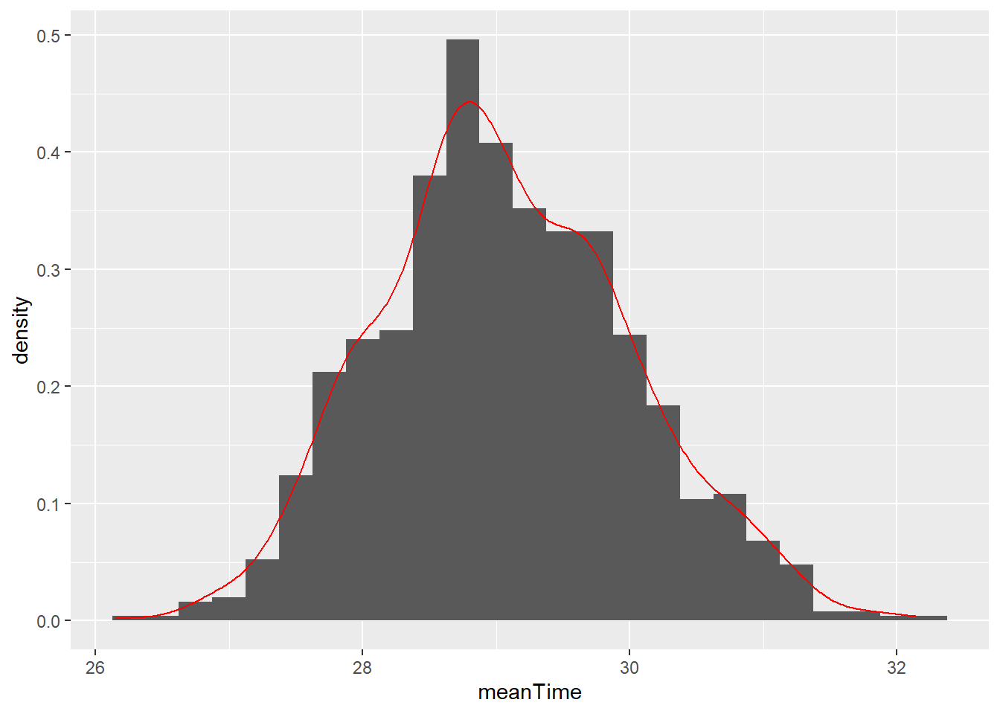
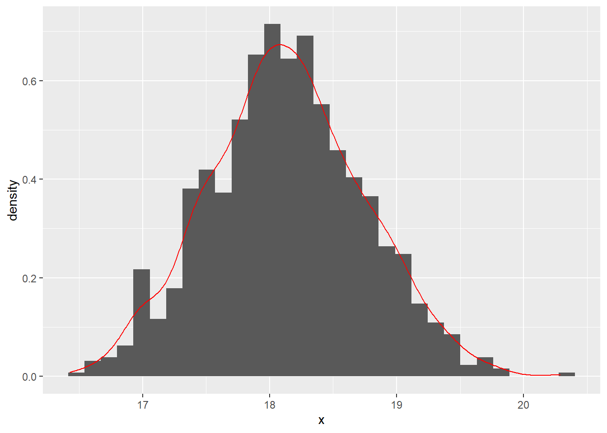
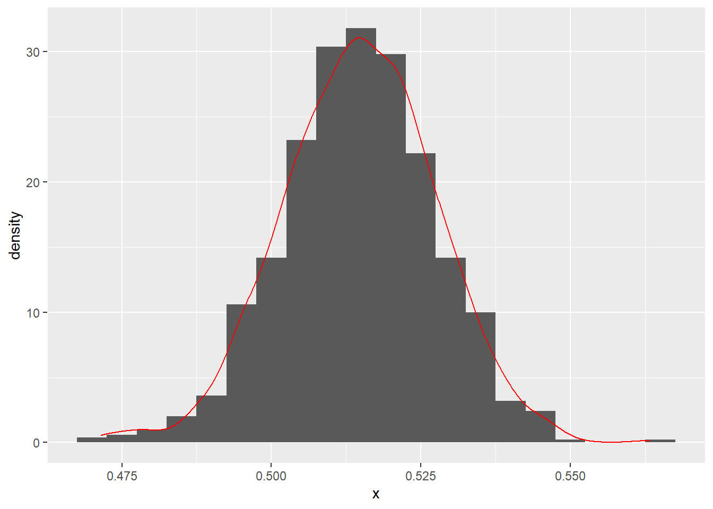

Chapter 5 Bootstrapping
5.1 Warning
Warning:
This page is for my own personal study purpose. Distribution is prohibited.
5.2 Introduction
The following note is made when I was studying Bret Larget’s note posted online. http://pages.stat.wisc.edu/~larget/stat302/chap3.pdf
He used the data from LOck5data as an example.
## 'data.frame': 500 obs. of 5 variables:
## $ City : Factor w/ 1 level "Atlanta": 1 1 1 1 1 1 1 1 1 1 ...
## $ Age : int 19 55 48 45 48 43 48 41 47 39 ...
## $ Distance: int 10 45 12 4 15 33 15 4 25 1 ...
## $ Time : int 15 60 45 10 30 60 45 10 25 15 ...
## $ Sex : Factor w/ 2 levels "F","M": 2 2 2 1 1 2 2 1 2 1 ...## [1] 29.11Now, he sampled a (b X n) table. Note that, the Atlanta data has 500 row, as it has 500 observations (or, people). But, in the following new matrix, it is a (1000 times 500) table. Also, it should be noted that the logic of sample function in R. This webpage provides some insight into this function. Basically, the following R code randomly sample a bigger sample of (1000 times 500) from those 500 data points. After that, the matrix function put such (1000 times 500) data points into a matrix of (1000 times 500).
B = 1000
n = nrow(CommuteAtlanta)
boot.samples = matrix(sample(CommuteAtlanta$Time, size = B * n, replace = TRUE),
B, n)Next, we need to calculate the mean for each row. Remember, we have 1000 rows. Note that, 1 in the apply function indicates that we calculate means on each row, whereas 2 indicates to each column.
We can then plot all the means.
## Loading required package: ggplot2## Warning: package 'ggplot2' was built under R version 3.6.3ggplot(data.frame(meanTime = boot.statistics),aes(x=meanTime)) +
geom_histogram(binwidth=0.25,aes(y=..density..)) +
geom_density(color="red")
## [1] 0.9083362## [1] 1.9## [1] 27.2 31.05.3 Normal distribution, SD, SE
Note, if we do not use bootstraping, we can use the standard CI formula (https://www.mathsisfun.com/data/confidence-interval.html). This formula assumes normal distribution. As we can see, this is close to the result based on the bootstrapping method.
\[\overline{X} \pm Z \frac{S}{\sqrt{n}}=29.11 \pm 1.96 \frac{20.72}{\sqrt{500}}=27.29, 30.93\]
Note that, in the following, the author used 2 times SE to calculate the CI. The relationship between SD and SE:
“Now the sample mean will vary from sample to sample; the way this variation occurs is described by the “sampling distribution” of the mean. We can estimate how much sample means will vary from the standard deviation of this sampling distribution, which we call the standard error (SE) of the estimate of the mean. As the standard error is a type of standard deviation, confusion is understandable. Another way of considering the standard error is as a measure of the precision of the sample mean." (https://www.ncbi.nlm.nih.gov/pmc/articles/PMC1255808/)
boot.mean = function(x,B,binwidth=NULL)
{
n = length(x)
boot.samples = matrix( sample(x,size=n*B,replace=TRUE), B, n)
boot.statistics = apply(boot.samples,1,mean)
se = sd(boot.statistics)
require(ggplot2)
if ( is.null(binwidth) )
binwidth = diff(range(boot.statistics))/30
p = ggplot(data.frame(x=boot.statistics),aes(x=x)) +
geom_histogram(aes(y=..density..),binwidth=binwidth) + geom_density(color="red")
plot(p)
interval = mean(x) + c(-1,1)*2*se
print( interval )
return( list(boot.statistics = boot.statistics, interval=interval, se=se, plot=p) )
}
## [1] 16.96166 19.350345.4 Sample function
To understand the function of sample in R.
## [1] 5 17 16 11 13 11 15 17 6 19 15 8 18 12 10 10 20 5 6 2The following uses loop to do the resampling. It uses sample function to index the numbers that they want to sample from the original sample. That is, [] suggests the indexing.
n = length(CommuteAtlanta$Distance)
B = 1000
result = rep(NA, B)
for (i in 1:B)
{
boot.sample = sample(n, replace = TRUE)
result[i] = mean(CommuteAtlanta$Distance[boot.sample])
}
with(CommuteAtlanta, mean(Distance) + c(-1, 1) * 2 * sd(result))## [1] 16.92509 19.386915.5 Proportion
So far, we have dealed with means. How about porpotions?Remember that, when calculating means, it starts with a single column of data to calculate the mean. Similarly, when calculating porpotions, you can just use a single column of data.

## [1] 0.1882346 0.5450988However, if we have 48 students (i.e., 48 observations) and thus we have a bigger sample. However, how can we do re-sampling? Based on the note, it is kind of simple. They group them together and then resample from it. Note that, when they re-sampling, the programming do not distinguish the difference between 48 observations. But just combined them as a single column (741+699=1440), and then generate a very long column (1440 times 1000) and then reshape it into a matrix (1440 time 1000). This is the basic logic of the boot.mean function.

## [1] 0.4876358 0.54153095.6 boot package
After having a basic idea of boostrapping, we can then use the package of boot.
## Warning: package 'boot' was built under R version 3.6.3data(CommuteAtlanta)
my.mean = function(x, indices)
{
return( mean( x[indices] ) )
}
time.boot = boot(CommuteAtlanta$Time, my.mean, 10000)
boot.ci(time.boot)## Warning in boot.ci(time.boot): bootstrap variances needed for studentized
## intervals## BOOTSTRAP CONFIDENCE INTERVAL CALCULATIONS
## Based on 10000 bootstrap replicates
##
## CALL :
## boot.ci(boot.out = time.boot)
##
## Intervals :
## Level Normal Basic
## 95% (27.31, 30.91 ) (27.25, 30.87 )
##
## Level Percentile BCa
## 95% (27.35, 30.97 ) (27.41, 31.05 )
## Calculations and Intervals on Original Scale5.7 Concept of Percentile
require(Lock5Data)
data(ImmuneTea)
tea = with(ImmuneTea, InterferonGamma[Drink=="Tea"])
coffee = with(ImmuneTea, InterferonGamma[Drink=="Coffee"])
tea.mean = mean(tea)
coffee.mean = mean(coffee)
tea.n = length(tea)
coffee.n = length(coffee)
B = 500
# create empty arrays for the means of each sample
tea.boot = numeric(B)
coffee.boot = numeric(B)
# Use a for loop to take the samples
for ( i in 1:B )
{
tea.boot[i] = mean(sample(tea,size=tea.n,replace=TRUE))
coffee.boot[i] = mean(sample(coffee,size=coffee.n,replace=TRUE))
}
boot.stat = tea.boot - coffee.boot
boot.stat## [1] 13.5636364 4.5454545 15.0545455 12.5272727 7.6545455 6.9090909
## [7] 16.4000000 14.4636364 26.1363636 8.3454545 16.6454545 23.9000000
## [13] 11.9909091 32.4090909 12.1272727 24.9909091 38.0454545 12.8727273
## [19] 26.7545455 26.4090909 11.8000000 15.9000000 23.9909091 17.7454545
## [25] 20.9181818 24.3909091 12.7818182 17.4818182 19.5909091 9.8363636
## [31] 22.3454545 0.4909091 6.3363636 11.4818182 6.6545455 21.7000000
## [37] 19.1545455 3.4818182 12.1090909 7.4000000 4.3727273 -1.3090909
## [43] 15.3363636 10.4636364 15.3909091 23.7000000 17.3545455 16.6181818
## [49] 7.8090909 13.7727273 8.2636364 17.8545455 21.8818182 15.0363636
## [55] 9.7000000 3.1363636 22.8363636 21.7727273 14.8181818 20.4818182
## [61] 20.2272727 21.0454545 24.9454545 24.8909091 25.9272727 18.1363636
## [67] 24.8636364 25.6181818 24.8181818 16.2818182 16.4090909 15.4090909
## [73] 25.0454545 2.9000000 16.0090909 13.0909091 3.0363636 -0.8181818
## [79] 17.7727273 11.9909091 20.3000000 17.4727273 20.3090909 21.6909091
## [85] 16.5727273 15.4727273 19.3272727 26.6363636 4.2181818 22.3363636
## [91] 16.1454545 16.4454545 15.8272727 16.4636364 10.1545455 21.1454545
## [97] 9.9181818 13.5090909 11.6454545 17.5454545 23.3090909 15.4090909
## [103] 22.2727273 31.8272727 23.4454545 12.5545455 27.0090909 2.4454545
## [109] 20.0545455 17.3272727 14.0727273 6.7454545 17.2727273 14.7454545
## [115] 20.3000000 13.6363636 3.3818182 3.8363636 9.0909091 19.4090909
## [121] 18.2818182 6.5090909 14.3545455 29.0454545 15.3363636 23.2363636
## [127] 34.7909091 29.1181818 15.1909091 26.0545455 27.8818182 20.9000000
## [133] 17.1636364 20.3090909 26.1181818 25.8454545 26.1272727 18.3545455
## [139] 27.0636364 1.0454545 6.9727273 -1.1545455 20.3545455 16.3272727
## [145] 23.1000000 4.1818182 21.1818182 19.5909091 6.5000000 24.0909091
## [151] 30.3727273 19.8181818 26.6909091 24.3727273 4.8727273 4.5363636
## [157] 19.3909091 33.9090909 20.9818182 20.1818182 20.8090909 12.7545455
## [163] 27.0454545 16.1909091 8.4454545 14.0090909 19.0363636 19.8363636
## [169] 17.1363636 14.6000000 19.8545455 26.0454545 16.2090909 13.2454545
## [175] 33.1181818 10.6545455 24.7636364 9.4090909 20.7181818 18.4090909
## [181] 29.5909091 25.7272727 25.3454545 20.6181818 24.6909091 13.0454545
## [187] 16.5272727 24.2272727 28.2363636 20.3272727 39.2454545 16.7272727
## [193] 1.3818182 16.4363636 22.9000000 7.9909091 5.2000000 13.8454545
## [199] 20.0090909 19.1363636 15.4181818 22.7727273 28.9727273 9.2363636
## [205] 13.3454545 19.5818182 26.0181818 15.7727273 21.7636364 16.9818182
## [211] 18.2272727 18.1363636 16.3090909 12.9727273 14.3545455 2.5272727
## [217] 9.7727273 -1.4363636 16.7000000 37.5272727 17.0181818 26.0363636
## [223] 17.5636364 18.4545455 11.3818182 24.4272727 12.4818182 3.4363636
## [229] 14.4545455 25.2727273 29.0727273 10.0090909 -0.3181818 18.5000000
## [235] 27.3363636 9.3272727 13.2000000 33.5818182 29.5636364 16.6545455
## [241] 15.6727273 20.4545455 10.8454545 4.6636364 15.4454545 30.0272727
## [247] 9.9090909 27.8727273 26.4454545 13.4727273 15.6272727 18.9000000
## [253] 16.6363636 5.6090909 23.6363636 19.5727273 15.6727273 24.7818182
## [259] 0.7909091 2.2181818 3.1545455 2.9272727 28.7272727 17.7818182
## [265] 10.7909091 18.0363636 20.5545455 16.8272727 11.8727273 10.9727273
## [271] 12.9545455 8.9909091 16.4181818 14.8454545 18.1272727 32.8454545
## [277] 21.3090909 21.7909091 27.9727273 5.9363636 14.6363636 12.4181818
## [283] 24.6000000 26.3454545 21.9454545 21.3181818 10.1181818 21.2636364
## [289] 13.7272727 15.5454545 10.5545455 7.6363636 15.2000000 14.8727273
## [295] 18.7272727 14.7181818 15.3909091 12.9090909 22.9818182 14.6636364
## [301] 21.5181818 9.1909091 23.7545455 14.5363636 16.4636364 9.1272727
## [307] 13.6636364 26.3454545 12.0181818 23.2636364 20.0545455 21.0363636
## [313] 21.8545455 9.4909091 21.9090909 21.8818182 14.4545455 13.6818182
## [319] 27.9272727 24.3909091 22.3727273 23.5909091 14.6909091 14.7818182
## [325] 24.8454545 11.1181818 7.7454545 5.6363636 17.5909091 6.1909091
## [331] 13.8818182 19.6727273 23.4090909 -0.1727273 15.3181818 20.0272727
## [337] 10.7090909 7.9636364 20.2454545 18.1181818 26.1000000 17.6909091
## [343] 20.2545455 14.2454545 17.9636364 25.1363636 8.7363636 15.8545455
## [349] 9.4818182 26.4545455 20.0636364 20.8545455 6.4272727 15.3272727
## [355] 23.4909091 17.1090909 24.2909091 11.5272727 18.8000000 21.4727273
## [361] 26.5909091 7.0545455 34.7818182 35.5363636 3.2181818 20.2909091
## [367] 11.8090909 18.8545455 18.7545455 2.4272727 7.5181818 27.5090909
## [373] 25.1181818 19.9090909 15.3363636 -3.4818182 18.8636364 17.5454545
## [379] 12.3636364 7.0636364 12.2181818 4.6727273 4.6818182 30.4545455
## [385] 27.6363636 17.5181818 13.7272727 29.1818182 12.2454545 17.5818182
## [391] -9.8272727 15.9363636 6.8272727 18.2090909 26.2909091 16.2636364
## [397] 12.7090909 21.4181818 4.8727273 7.9818182 25.9090909 11.2909091
## [403] 16.4454545 -0.3272727 13.9727273 10.3272727 1.3272727 13.4272727
## [409] 27.2818182 33.8545455 23.1000000 25.4909091 17.0181818 17.1272727
## [415] 26.3181818 5.3000000 32.1090909 10.9272727 23.1909091 9.2181818
## [421] 17.4090909 6.4727273 21.0909091 16.3454545 9.5363636 17.8181818
## [427] 29.3727273 16.4454545 24.7454545 -1.8909091 12.5181818 13.6545455
## [433] 20.1545455 15.7636364 29.4545455 7.9727273 22.6727273 12.9000000
## [439] 24.1363636 13.3727273 4.6636364 11.9545455 18.1272727 5.2363636
## [445] 9.2909091 24.4181818 17.5090909 11.3727273 9.6727273 17.6363636
## [451] 15.3909091 10.9909091 19.9181818 6.8909091 7.3727273 32.9454545
## [457] 9.5000000 27.8636364 30.2090909 14.5363636 16.5363636 20.7090909
## [463] 25.7000000 22.0727273 11.8636364 26.4272727 22.4727273 5.4818182
## [469] 28.1000000 27.4090909 25.7090909 21.1090909 8.5181818 21.6454545
## [475] 27.9181818 18.3272727 6.3727273 26.0272727 6.1545455 17.4545455
## [481] 15.4545455 22.4272727 15.6818182 16.4181818 28.0181818 4.3000000
## [487] 7.3636364 2.6272727 20.8818182 18.4000000 21.2454545 17.4363636
## [493] 23.3454545 26.7727273 20.2909091 14.6545455 29.2909091 -7.7636364
## [499] 24.4636364 17.2636364# Find endpoints for 90%, 95%, and 99% bootstrap confidence intervals using percentiles.
# 90%: 5% 95%
quantile(boot.stat,c(0.05,0.95))## 5% 95%
## 3.153636 29.121364## 2.5% 97.5%
## 0.9118182 32.2665909## 0.5% 99.5%
## -2.694318 36.5417735.8 Bootstrapping for correlation interval
Some data and code are from: https://blog.methodsconsultants.com/posts/understanding-bootstrap-confidence-interval-output-from-the-r-boot-package/
## Student LSAT GPA
## 1 1 576 3.39
## 2 2 635 3.30
## 3 3 558 2.81
## 4 4 578 3.03
## 5 5 666 3.44
## 6 6 580 3.07
## 7 7 555 3.00
## 8 8 661 3.43
## 9 9 651 3.36
## 10 10 605 3.13
## 11 11 653 3.12
## 12 12 575 2.74
## 13 13 545 2.76
## 14 14 572 2.88
## 15 15 594 2.96##
## Pearson's product-moment correlation
##
## data: data_correlation$LSAT and data_correlation$GPA
## t = 4.4413, df = 13, p-value = 0.0006651
## alternative hypothesis: true correlation is not equal to 0
## 95 percent confidence interval:
## 0.4385108 0.9219648
## sample estimates:
## cor
## 0.7763745In the following, I will write my own code to execute the bootstrapping. I set the bootstrapping number only 500, for illustrative purposes. As we can see, the distribution is not symmetrical.
As we can see, the quantile result and c(-1, 1) X 2 are not the same, as the latter assumes symmetrical distribution. However, based on the histogram, we know it is not the case. Thus, quantile would be more appropriate. You can compare the result with that from the boot function.
## [1] 15set.seed(12345)
B = 500
result = rep(NA, B)
for (i in 1:B)
{
boot.sample = sample(n_row, replace = TRUE)
result_temp = cor.test(data_correlation[boot.sample,]$LSAT,data_correlation[boot.sample,]$GPA)
result[i]=result_temp$estimate
}
hist(result)
## 2.5% 97.5%
## 0.4369293 0.9556859## [1] 0.1342631## [1] 0.5107704 1.0370816## [1] 0.7763745## [1] 0.5132189 1.0395301# why add 0.005? Not sure. The following is from the webpage. Later note: please refer to the webpage, as it provides the logic of basic interval.
0.776+0.005+c(-1, 1) * 1.96 * 0.131## [1] 0.52424 1.03776In the blog mentioned above, the author used the boot function in R. For the logic of basic interval, please refer to: https://blog.methodsconsultants.com/posts/understanding-bootstrap-confidence-interval-output-from-the-r-boot-package/
library(boot)
get_r <- function(data, indices, x, y) {
d <- data[indices, ]
r <- round(as.numeric(cor(d[x], d[y])), 3)
r}
set.seed(12345)
boot_out <- boot(
data_correlation,
x = "LSAT",
y = "GPA",
R = 500,
statistic = get_r
)
boot.ci(boot_out)## Warning in boot.ci(boot_out): bootstrap variances needed for studentized
## intervals## BOOTSTRAP CONFIDENCE INTERVAL CALCULATIONS
## Based on 500 bootstrap replicates
##
## CALL :
## boot.ci(boot.out = boot_out)
##
## Intervals :
## Level Normal Basic
## 95% ( 0.5247, 1.0368 ) ( 0.5900, 1.0911 )
##
## Level Percentile BCa
## 95% ( 0.4609, 0.9620 ) ( 0.3948, 0.9443 )
## Calculations and Intervals on Original Scale
## Some BCa intervals may be unstable